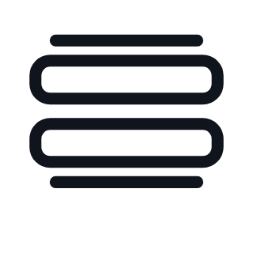
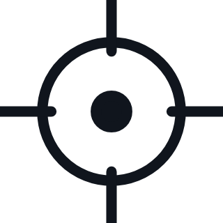
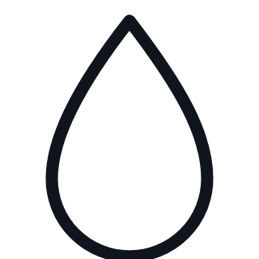
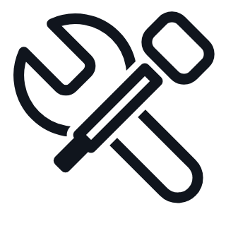

LEISTUNG IM ALLTAG
Vier Systeme. Ein sauberer Prozess.
Der C5 verbindet gründliche Bodenreinigung, sichere Navigation, autonome Versorgung und wartungsarme Technik.
Kehren und Scheuern in einem Arbeitsgang –
mit hoher Wasseraufnahme und konsequenter Kantenreinigung.

Reinigungsmechanik
- Doppelwalzenbürsten entfernen auch schwere Verschmutzungen.
- Zwei-Kammer-Saugfuß reduziert Restwasser in Fugen.

Navigation & Anpassung
- Laser- und visuelle Lokalisierung für unterschiedliche Szenen.
- Randbürste arbeitet dicht an Kanten im geschlossenen Kreislauf.

Autonomer Betrieb
- Autonomes Laden sowie Frisch- und Schmutzwasser-Management.
- Tür- und Aufzuganbindung für durchgängige Abläufe.

Wartung & Lebensdauer
- Selbstreinigender Schmutzwassertank reduziert täglichen Aufwand.
- Gebläselebensdauer 10.000 h und langlebige Komponenten.
95 %Schmutzaufnahme
<68 dB(A)Geräuschpegel
25 kgBodendruck
4 minTank-Selbstreinigung